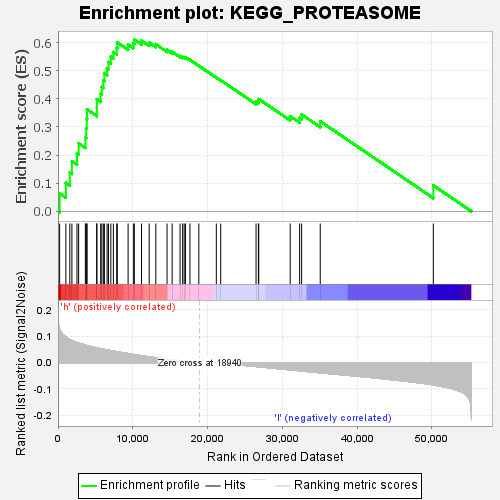

| | | Dataset | VCAN.VCAN.cls#h_versus_l.VCAN.cls#h_versus_l_repos |
| Phenotype | VCAN.cls#h_versus_l_repos |
| Upregulated in class | h |
| GeneSet | KEGG_PROTEASOME |
| Enrichment Score (ES) | 0.6109214 |
| Normalized Enrichment Score (NES) | 1.5039816 |
| Nominal p-value | 0.125 |
| FDR q-value | 1.0 |
| FWER p-Value | 0.79 |
Table: GSEA Results Summary

Fig 1: Enrichment plot: KEGG_PROTEASOME
Profile of the Running ES Score & Positions of GeneSet Members on the Rank Ordered List
| SYMBOL | TITLE | RANK IN GENE LIST | RANK METRIC SCORE | RUNNING ES | CORE ENRICHMENT | | 1 | PSMA8 | na | 220 | 0.126 | 0.0639 | Yes |
| 2 | PSMD3 | na | 1052 | 0.096 | 0.1008 | Yes |
| 3 | PSMB3 | na | 1581 | 0.087 | 0.1380 | Yes |
| 4 | PSMB10 | na | 1859 | 0.083 | 0.1778 | Yes |
| 5 | PSME1 | na | 2536 | 0.076 | 0.2064 | Yes |
| 6 | PSMB2 | na | 2757 | 0.073 | 0.2420 | Yes |
| 7 | PSMA7 | na | 3655 | 0.066 | 0.2616 | Yes |
| 8 | PSME3 | na | 3767 | 0.065 | 0.2948 | Yes |
| 9 | PSMA6 | na | 3842 | 0.065 | 0.3284 | Yes |
| 10 | PSMD11 | na | 3878 | 0.064 | 0.3626 | Yes |
| 11 | PSMF1 | na | 5187 | 0.055 | 0.3688 | Yes |
| 12 | PSMD13 | na | 5190 | 0.055 | 0.3987 | Yes |
| 13 | PSMA1 | na | 5706 | 0.052 | 0.4175 | Yes |
| 14 | PSMB4 | na | 5859 | 0.051 | 0.4425 | Yes |
| 15 | PSMB6 | na | 6062 | 0.050 | 0.4659 | Yes |
| 16 | PSMC1 | na | 6205 | 0.049 | 0.4900 | Yes |
| 17 | PSMB9 | na | 6562 | 0.048 | 0.5092 | Yes |
| 18 | PSMC4 | na | 6749 | 0.047 | 0.5309 | Yes |
| 19 | PSMA5 | na | 7065 | 0.045 | 0.5495 | Yes |
| 20 | PSMB8 | na | 7404 | 0.043 | 0.5667 | Yes |
| 21 | PSMB5 | na | 7854 | 0.041 | 0.5807 | Yes |
| 22 | PSMA3 | na | 7924 | 0.041 | 0.6013 | Yes |
| 23 | PSMC1P4 | na | 9373 | 0.034 | 0.5932 | Yes |
| 24 | PSMA6P4 | na | 10074 | 0.031 | 0.5971 | Yes |
| 25 | PSMB1 | na | 10204 | 0.030 | 0.6109 | Yes |
| 26 | PSMC6 | na | 11168 | 0.026 | 0.6074 | No |
| 27 | PSMD8 | na | 12192 | 0.022 | 0.6006 | No |
| 28 | PSMD7 | na | 13078 | 0.018 | 0.5945 | No |
| 29 | PSMD2 | na | 14580 | 0.013 | 0.5742 | No |
| 30 | PSMC3 | na | 15261 | 0.011 | 0.5675 | No |
| 31 | PSME2 | na | 16318 | 0.007 | 0.5523 | No |
| 32 | PSMA2 | na | 16664 | 0.006 | 0.5493 | No |
| 33 | IFNG | na | 16868 | 0.005 | 0.5486 | No |
| 34 | PSMD1 | na | 17041 | 0.005 | 0.5481 | No |
| 35 | PSMD12 | na | 17645 | 0.003 | 0.5390 | No |
| 36 | PSMC2 | na | 18829 | 0.000 | 0.5177 | No |
| 37 | PSMD14 | na | 21170 | -0.001 | 0.4758 | No |
| 38 | PSMD4 | na | 21755 | -0.002 | 0.4664 | No |
| 39 | PSMC5 | na | 26481 | -0.015 | 0.3888 | No |
| 40 | PSMB11 | na | 26794 | -0.016 | 0.3917 | No |
| 41 | PSMA4 | na | 26844 | -0.016 | 0.3994 | No |
| 42 | PSMB7 | na | 31047 | -0.028 | 0.3382 | No |
| 43 | PSME4 | na | 32309 | -0.031 | 0.3322 | No |
| 44 | POMP | na | 32576 | -0.032 | 0.3445 | No |
| 45 | SEM1 | na | 35063 | -0.038 | 0.3203 | No |
| 46 | PSMD6 | na | 50183 | -0.084 | 0.0921 | No |
Table: GSEA details [plain text format]
Fig 2: KEGG_PROTEASOME
Blue-Pink O' Gram in the Space of the Analyzed GeneSet
Fig 3: KEGG_PROTEASOME: Random ES distribution
Gene set null distribution of ES for KEGG_PROTEASOME